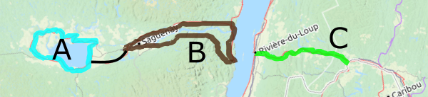

Welcome to the English page on Cyclotouristechezsoi.ca, meant as an informational page for bicycle touring in Quebec. Home to many beautiful cities, breathtaking sceneries, and its charming French-speaking people, this province of 8.5 million inhabitants provides for excellent cycling opportunities throughout various landscapes.
Visiting Quebec
Language and culture
Our lingua franca is French. That said, it differs greatly in its spoken form from the variety spoken in Europe. In the western half of Montréal, as well as many areas bordering Ontario, New York, and Vermont, English is used as a common language by a significant proportion of the population. Road signs are normally only in French, but locals in many towns along major cycling routes are used to seeing lost tourists on their bikes, and will often be happy to help them find their way whether they are fluent, or can only say yes, no, toaster.

The people of Quebec are called Quebecers, or Québécois, in their native language. People either identify as such, as French Canadian, as Canadian, or a combination thereof. Many Montrealers are of various origins, and therefore speak three or more languages. The important thing is to come with an open mind, and be willing to try even a few words in French. People will appreciate, but do not get offended if they switch to English. It's (probably) not because your French is horrible! They are simply trying to be helpful!
Climate
The summer climate in southern Quebec is warm and humid. The hottest time of the year is late July and heat waves (over 30°C86°F) are getting more common. Thunderstorms are common in the afternoon but in no way match the intensity often witnessed in the USA. Tornadoes are thus extremely rare, with around five occurring per year, generally minor ones. North and east of the City of Québec, summer days are often cooler and the sea breeze usually prevents it from getting uncomfortably hot.
|
Min T°CMin F°C
|
Max T°CMax F°C
|
Nights < 2°CNights < 36°F
|
Days > 30°CDays > 86°F
|
Rain (mm)Rain (in)
|
Rainy days
|
|
|---|---|---|---|---|---|---|
| May | 8 | 19 | 2 | 0.4 | 81 | 14 |
| June | 13 | 24 | <0.1 | 2 | 87 | 13 |
| July | 16 | 26 | 0 | 4 | 89 | 12 |
| Aug. | 15 | 25 | 0 | 3 | 94 | 12 |
| Sept. | 10 | 21 | 0.8 | 0.7 | 83 | 11 |
|
Min T°CMin F°C
|
Max T°CMax F°C
|
Nights < 2°CNights < 36°F
|
Days > 30°CDays > 86°F
|
Rain (mm)Rain (in)
|
Rainy days
|
|
|---|---|---|---|---|---|---|
| May | 5 | 17 | 6 | 0.2 | 116 | 15 |
| June | 11 | 22 | 0.1 | 1 | 111 | 13 |
| July | 14 | 25 | 0 | 3 | 121 | 14 |
| Aug. | 13 | 24 | 0 | 0.8 | 104 | 13 |
| Sept. | 8 | 18 | 0.9 | 0.1 | 116 | 13 |
|
Min T°CMin F°C
|
Max T°CMax F°C
|
Nights < 2°CNights < 36°F
|
Days > 30°CDays > 86°F
|
Rain (mm)Rain (in)
|
Rainy days
|
|
|---|---|---|---|---|---|---|
| May | 8 | 19 | 3 | 0.7 | 80 | 13 |
| June | 13 | 24 | 0 | 3 | 93 | 13 |
| July | 16 | 27 | 0 | 5 | 92 | 12 |
| Aug. | 14 | 25 | 0 | 4 | 86 | 11 |
| Sept. | 10 | 20 | 1 | 0.9 | 90 | 12 |
|
Min T°CMin F°C
|
Max T°CMax F°C
|
Nights < 2°CNights < 36°F
|
Days > 30°CDays > 86°F
|
Rain (mm)Rain (in)
|
Rainy days
|
|
|---|---|---|---|---|---|---|
| May | 5 | 15 | 7 | 0.2 | 84 | 14 |
| June | 10 | 21 | <0.1 | 0.5 | 85 | 15 |
| July | 13 | 23 | 0 | 1 | 91 | 15 |
| Aug. | 13 | 22 | 0 | 0.4 | 86 | 14 |
| Sept. | 9 | 17 | 0.9 | <0.1 | 88 | 14 |
|
Min T°CMin F°C
|
Max T°CMax F°C
|
Nights < 2°CNights < 36°F
|
Days > 30°CDays > 86°F
|
Rain (mm)Rain (in)
|
Rainy days
|
|
|---|---|---|---|---|---|---|
| May | 1 | 14 | 18 | <0.1 | 84 | 14 |
| June | 6 | 20 | 5 | 0.7 | 80 | 13 |
| July | 10 | 23 | <0.1 | 2 | 100 | 15 |
| Aug. | 10 | 23 | 0.6 | 1 | 94 | 13 |
| Sept. | 5 | 18 | 8 | 0.2 | 82 | 12 |
|
Min T°CMin F°C
|
Max T°CMax F°C
|
Nights < 2°CNights < 36°F
|
Days > 30°CDays > 86°F
|
Rain (mm)Rain (in)
|
Rainy days
|
|
|---|---|---|---|---|---|---|
| May | 3 | 16 | 12 | 0.5 | 78 | 15 |
| June | 9 | 22 | 1 | 2 | 88 | 15 |
| July | 12 | 24 | 0 | 3 | 112 | 17 |
| Aug. | 11 | 23 | 0.1 | 2 | 91 | 16 |
| Sept. | 7 | 18 | 5 | 0.3 | 103 | 16 |
Summer winds in Quebec tend to blow from the west or south-west, favouring journeys made in this direction. When doing a loop, keep in mind the wind is generally calmer in covered areas, i.e. within rail trails sheltered by trees.
Animals
Quebec is not Australia! The fauna is a lot more benign than in many other parts of the world, and we have our cold winters to thank for that. For a start, poisonous snakes and spiders are extremely uncommon. However, there are certain dangers to watch out for.
Do not surprise them.
If bit, go to the pharmacy or see a doctor as you may need preventive medication.
If symptoms of rabies appear, the disease is deadly and it is too late.
Though more annoying than dangerous, mosquitoes, deer flies, horse flies, and no-see-ums will make your trip miserable if you don't arm yourself with bug spray, especially at the beginning of the summer. Once mid-August comes around, it is generally more pleasant to be in the forest, even at dusk. Peak season for mosquitoes is late May and June, and should be avoided when planning on doing a lot of stealth camping in the woods.
Getting in
Flying into Quebec will most likely bring you into Montréal's international airport. If this is the case, you can cycle into the city quite easily following cycle tracks and lanes towards the lakeshore where the Route verte 5 and the Lachine Canal bike route whisk you into the city centre. Commuter trains (infrequent outside of peak times) run from Dorval station, 1.5 kmabout a mile from the airport, to Lucien-L'Allier station, in the city centre. Bicycles are permitted on these trains at all times.

Shall your bike still be in a box, you can jump on STM's 747 shuttle which gets you into the city with frequent departures.
Other options for flying into Quebec include the international airports in Ottawa (close to Gatineau) and Quebec City, both between 15 and 20 kmaround 10 miles from their respective city centres. There are various regional airports located throughout the province but they are only served by several flights a day.
Bicycle tourists may equally arrive by train from Ottawa, Toronto, or the Canadian Maritimes, or by bus. See the information below for more details about how to properly pack your ride for the trip.
Places to Ride
Oh the places to go! Quebec is known for the great cycling opportunities it presents, and the Route verte, which in reality is a network of seven cycle routes criss-crossing the province. Just over half of the Route verte utilizes on-road segments, either quiet country roads or shoulders of busier routes. The rest is off-road, normally right-of-ways comprising of former railways.
Route 1
This is the longest route of the network and connects 10 regions together.
Main cities
Ontario border Gatineau Montréal Sherbrooke Lévis Rivière-du-Loup Ste-Flavie Gaspé Ste-Flavie (loop)
Itineraries

A. Outaouais River
Ride from Montréal to Ottawa along the Outaouais River. The beauty of this ride is it could be done with a few variants and on both sides of the provincial border, making your round-trip a bit more... round. Plan a full week for a loop. Make sure to spend some time in both Montréal and Ottawa which have plenty of sights to see.

B. Eastern Townships
Another lovely region in which to cycle is the general area between Montréal and Sherbrooke, most of that being in the Eastern Townships. In the towns, you will see buildings dating from the post-US revolution Loyalist era. In the countryside, you will feast your eyes on rolling hills and sloping farmlands. Once again, a round-trip is doable as there are other trails to choose from along a big portion of this route.

C. Gaspé peninsula
If you like a challenge, the Gaspé Peninsula will take you around an entire region surrounded by water. Difficulty varies greatly between sections, as the northeastern part will make your legs numb. Doing it in a clockwise fashion ensures you profit from tailwinds where you need them the most, but also puts the highway between you and the water when it comes to taking photos.
Route 2
From the rural Abitibi region through the boreal jungle, this route goes all the way to the USA.
Main cities
Ville-Marie Rouyn-Noranda Val-d'Or Mont-Laurier Mont-Tremblant Montréal New York border
Itineraries

A. La Vérendrye
For an epic ride up north, try taking a bus to Louvicourt or Val-d'Or and cycling down to Grand-Remous or Mont-Laurier. You will cross the immense La Vérendrye Wildlife Reserve. Make sure to stock up on food and to have a water filter, as there is very little in the ways of resupplying while riding through "the park".
B. Laurentians
A classic for families and beginners is the P'tit train du Nord, Quebec's longest rail trail at 220 km135 miles, stretching from Mont-Laurier to the northern suburbs of Montréal. You will ride through cottage country, encountering many lakes and parks as you go. Once in Blainville, you're a short ride from Montréal.
C. Towards New York
If you're riding in from New York state, you'll most likely cross into Quebec at Lacolle, and ride the Route verte 2 to St-Jean-sur-Richelieu. From there, the Chambly Canal and other cycle tracks bring you directly into Montréal.

Route 3
Near or far, the St. Laurent River and this bike route are one across the south of the province.
Main cities
Coteau-du-Lac Longueuil Sorel-Tracy Bécancour Lévis
Itineraries

A. Beauharnois Canal
If you only have a few days, a simple loop from Montréal to Valleyfield is doable and enjoyable. Route 5 can be used on your way back for the sake of alternating. Make sure to check out the largest hydroelectric plant in southern Quebec, located at Beauharnois, and ride along the 25 km16 mile long canal which feeds this power plant.
B. Montréal to the City of Québec (south shore)
This Montréal to Quebec City route competes with the one on Route 5 across the river. The option presented here will have you explore some of the finest landscapes of the river valley, with walls of corn, open horizons, and occasionnal vistas on the St. Laurent River. Why not come back from the other side?

Route 4
Riding this route through the centre of Quebec will get you to see the Canadian shield, the St. Laurent valley and the Appalachians in one ride.
Main cities
Shawinigan Trois-Rivières Bécancour Drummondville Bromont Sutton Vermont border
Itineraries
A. Mauricie
The Route verte 4 is only of the ways to get from Trois-Rivières to Shawinigan, making this a good option for a loop. To make things more challenging, La Mauricie National Park is only a bit further up. Otherwise, check out the Véloboucles Mauricie, on-road cycle routes going through the regional countryside.

B. La Campagnarde
If you're looking for an easy ride, try heading from Drummondville to the Yamaska National Park on the Campagnarde rail trail. Once there, you can do a trail-only loop via Granby and Waterloo. This is a very family-friendly option of a trip.
C. Brome-Missisquoi
There is a world (or a region) of cycling opportunities in the north-south corridor stretching from Bromont to the Vermont border. If you purposely veer off this route, you will encounter a large network of packed – not loose – gravel roads going in all directions, including up. There is some climbing involved, however. Otherwise, if you have a passport and the border is open, no need to stop at the end of the road!
Route 5
From Ontario to (almost) Labrador, this historic route will make you fall in love with Quebec again!
Main cities
Ontario border Montréal Trois-Rivières Québec Tadoussac Baie-Comeau
Itineraries

A. Waterfront Trail
If riding in from Toronto or Kingston, this will be the route welcoming you to Quebec. Almost right away, on-road cycling turns into state-of-the-art cycle tracks, through a glorious forest and then along a canal all the way to the suburbs of Montréal, where it doesn't stop becoming more interesting.

B. The King's road
Anyone even slightly comfortable riding on the road who wants to see Quebec should do the King's road, or Chemin du Roi, from Montréal to the City of Québec. Old churches, historic buildings, this will repeat in almost every town. Once at the end point, you could even come back via the south shore, otherwise by train or bus.

C. Côte-Nord
If you're looking for a more remote expedition, ride from Tadoussac until Baie-Comeau along the north shore of the estuary. You can expect to spot some whales, otherwise the coniferous forests and the maritime landscape will make you happy to have chosen to ride on the Côte-Nord. There are several towns which have ferry connections to the other side, shall you choose to do a loop.

Route 6
From the City of Québec, head north or south to two equally remote parts of Quebec.
Main cities
Rivière-à-Pierre Québec St-Georges Maine border
Itineraries

A. Portneuf
If you find yourself in Montréal wanting to go in the middle of nowhere, take a three-times-a-week train to Rivière-à-Pierre and cycle down to the City of Québec. Before having descended into historic Old Quebec, you will have had the entire afternoon and the next day riding through a "tunnel under the trees", i.e., a beautiful rail trail with a lot of cycling rest areas along the way.
B. Beauce
More of an off-the-beaten-path destination for international tourists, the Beauce region is a river valley with a cycle route currently being upgraded one kilometre at a time. If you get bored, which is improbable, the Bellechasse rail trail heads off in a northeasterly direction, with the possibilities of doing a loop combining both routes.
PS: there is no Route 7.
Route 8
Here you have a dramatic route going from a vast interior sea to a fjord, to another large lake.
Main cities
Métabetchouan–Lac-à-la-Croix Alma Roberval Métabetchouan–Lac-à-la-Croix (loop) Saguenay Tadoussac Rivière-du-Loup Témiscouata-sur-le-Lac New Brunswick border
Itineraries
A. Lac-St-Jean
Another family-friendly route is the tour of the St-Jean Lake, one of the biggest of Quebec. On the menu, beaches, a national park, a First Nations village, a ghost town, a zoo, and a lot of wild blueberries! There's a lot to see and to do, and the route alternates between off-road cycle tracks, rather safe highway shoulders, and quiet rural roads.

B. Fjord-du-Saguenay
The fjord is one of the ultimate road bike challenges the province has to offer. You can ride on the Route verte 8 which utilises Route 172 on the north shore, or take the south shore counterpart, Route 170. There's even a fjord shuttle which whisks passengers back and forth on the water, providing you with a way to see the majestic fjord, and a moment of resting from the leg-numbing hills these roads make you endure. A loop from Saguenay to St-Siméon and Tadoussac is a memorable journey to experience at least once.

C. Témiscouata
The Petit-Témis interprovincial linear park is another "tunnel under the trees" rail trail option with a long stretch along the Témiscouata Lake. There, a small ferry can take you across to the national park. Between Rivière-du-Loup and Témiscouata-sur-le-Lac, three rustic campsites along the trail offer a peaceful night's sleep. Further east, the trail enters New Brunswick, ending in Edmundston. Don't forget to advance the clocks by one hour!
Across Quebec
On a cross-Canada trip? Follow this route suggestion to make the most of your stay in Quebec!
Main cities
Pembroke, ON Gatineau Montréal Trois-Rivières Québec Rivière-du-Loup Rimouski Campbellton, NB
Itineraries

Part 1: Straddling the Outaouais River
In Pembroke, you'll exit Ontario (for now) and ride the Route verte 1, on a rail trail through the western Quebec forest. In Gatineau, you're a simple hop away from Ottawa and all of its sights, after which you will ride mostly on roads until you reach the resort village of Oka. From there, the most scenic entrance to Montreal is by ferry to Hudson, along the river to Vaudreuil, and the Route verte 5. The ride through the West Island of Montreal is quite impressive with its enticing parks along the lakefront. The Lachine Canal trail will take you directly downtown, but stay on the Route verte if you're not tired of the blue horizon.

Part 2: The King's Road
Although the same long-distance cycle route becomes a long string of fabulous rail trails all the way to Quebec City, you still have a few provinces to go before the end of your trip. The Route verte 5 is therefore not only much shorter, but will also give you an inside to Quebec's history. This is the oldest road of the province. Old churches, vistas on the St-Laurent river, and historic buildings will be present in almost every town. Once at the end point, it would be wise to take a few days to explore the oldest city in North America.
Part 3: The Maritimes: a prequel
This is where the river you've been following widens, and the smell of saltwater starts to invade the air! Along the Route verte 1 that you'll once again be riding, numerous villages will give you a nice place to rest along the estuary. Between Trois-Pistoles and Rimouski, the itinerary is far from flat, but you will be amazed when going through the Bic National Park. The Gaspé loop starts at Ste-Flavie. You will need to turn inland and climb into the hills. On the other side, the Matapédia river valley, where you'll be riding down to Campbellton, New Brunswick, on a valley road surrounded by walls of trees on each side.
Total distance: between 1200 and 1250 km. Altitude gain: ≈ 7000 metres.
In addition to the Route verte, there are many other trails and on-road cycling opportunities across all regions. Cycling is not permitted on autoroutes (motorways or expressways), numbered between 1 and 99, and 401 to 999. The primary highways (trunk roads maintained by the provincial government) are numbered from 101 to 199, and secondary highways (distributor roads) run between 201 and 399. Cycling is permitted on all of them except short stretches with autoroute-like characteristics. Selecting the bicycle friendliness layer on the legend of either the Quebec 511 or the Route verte interactive map will allow you to click on a segment and see traffic volume and shoulder width, amongst other relevant information.
If you care for details, it's helpful to know that even-numbered routes normally follow the St. Laurent River, while odd-numbered ones are perpendicular. The St. Laurent is considered a fleuve in French, just like the Nile or the Rhine. Rivière is what all other rivers are referred to. There is only one fleuve in Quebec, so when someone uses that word, they are talking about that one river alone.
Getting Around
Getting around Quebec with a bike in public transport is useful when one doesn't have unlimited time to explore only by bicycle. Tourists arriving from abroad who want to cycle a particular region may have to fly into a major city and take a train or a bus to their cycling destination. Fortunately, it isn't as complex any more.
When travelling by intercity train (VIA Rail), only those offering checked baggage service enable you to bring your bicycle, normally unpacked, for a $25 fee. Charlevoix offers regional rail service with bikes travelling for a small fare. In the Montréal area, Exo provides regional commuter service allowing bikes on board all trains.
Buses are a bit more complex, as the bike will normally have to go into a box, though some carriers accept them in giant plastic bags. The appropriate packing material is sold at many service points of Expedibus, the company which manages the shipping of baggage and bicycles across Quebec. Call in advance to make sure they have boxes at your point of departure! There are some regional carriers which allow bikes to be carried on a rack at the front of a bus.
This map (in French) gives you all the information regarding transport services, including where and how you can transport a bike.
Spending the night
The one thing to note is the Bienvenue cyclistes lodging network for touring cyclists. This means basic tools if you forgot yours, as well as information about local cycling routes. Better yet, if camping, you will always have space even when showing up without notice. If you choose to be lodged under a roof such as at a B&B or a hotel, your bike will be too, in a covered and locked area.
Many of the local touring cyclists will choose to travel with a tent and camping gear. Campgrounds can be found in many places, and a spot for your tent will cost anywhere from $25 to $45, too often on the upper end of the scale. Some will stealth camp on public domain which is legal, or at a rest stop along rail trails which is sometimes forbidden. In practice, when one arrives late, leaves early, starts no fire, and leaves no trace, it is easy to do it without getting in any form of trouble. One can also save somewhat exorbitant camping fees and get a good night's rest not surrounded by a hundred RVs.
A room at a bed and breakfast could be hard to come by during the height of the summer, so light touring should be carefully planned in advance to avoid bad surprises. Many Quebecers also use Warmshowers, a network of hosts offering a couch, a bed, or a place to pitch a tent for touring cyclists.
About
High school teacher living in Montréal, and soon-to-be programmer, I decided to learn some coding while sharing my knowledge of bicycle touring online. After completing my project, I went on to make a one-page site in English, so people outside Quebec could discover this excellent cycling destination. To contact me, you may use the form found on the French-language section.